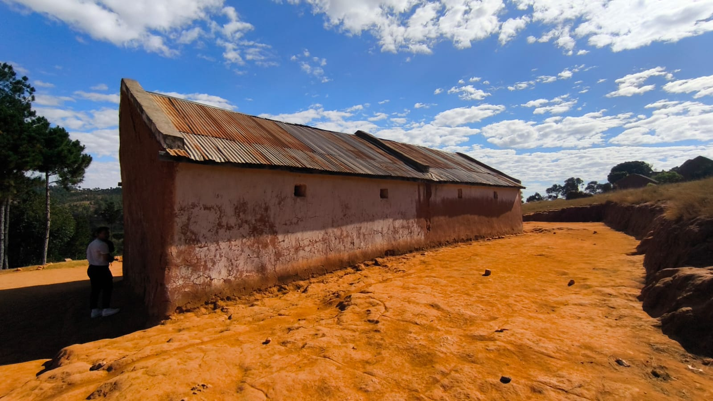
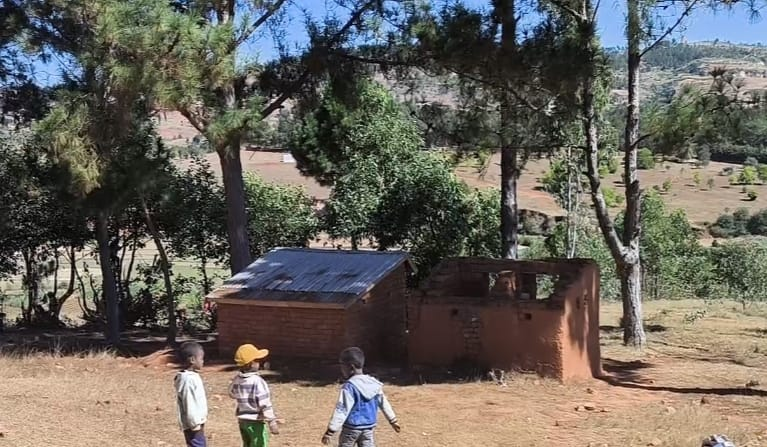
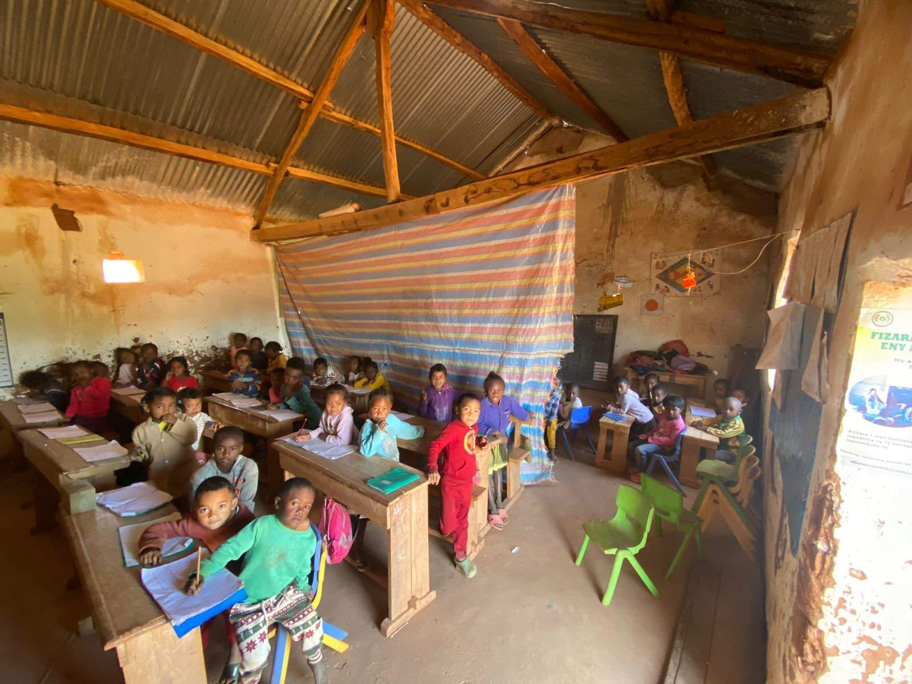
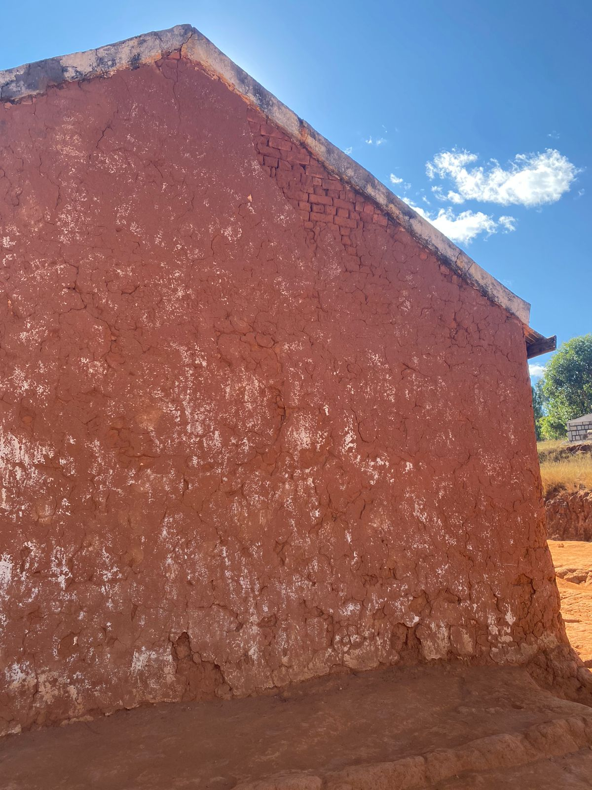
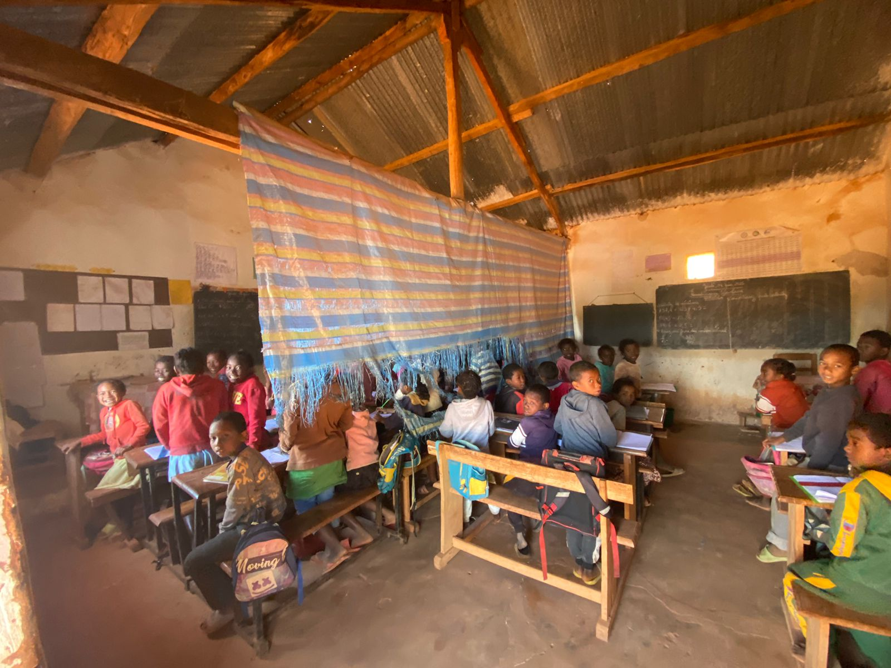

Bâti & structure
Finalisation du nouveau bâtiment, réhabilitation de l'ancien, renforcement structurel et toiture étanche.

Commune rurale d'Ambatofahavalo, à 14 km (piste) d'Ambatofotsy (RN7), zone enclavée.
111 élèves (53 garçons, 58 filles), enseignants et communauté.
Sécuriser et finaliser un environnement scolaire digne et durable.

Finalisation du nouveau bâtiment, réhabilitation de l'ancien, renforcement structurel et toiture étanche.

Ateliers de formation du comité de gestion, barrière verte anti-érosion, encadrement technique des compagnons locaux.

Latrines séparées par genre, point d'eau et kits de lavage des mains.

Tables-bancs, cloisons de séparation et aménagement des salles de classe.
Avant toute demande de soutien, l'association a engagé ses propres moyens sur le terrain.
Fourniture de tables-bancs
Cloisons de séparation
Kits de lavage des mains
Travaux de peinture de protection


Document détaillé : budget, calendrier, équipe et indicateurs de suivi.